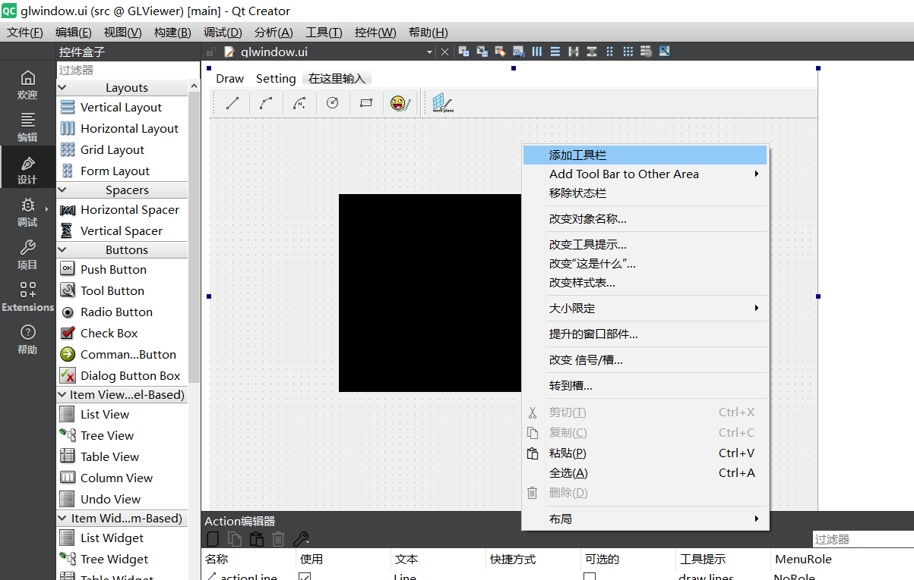
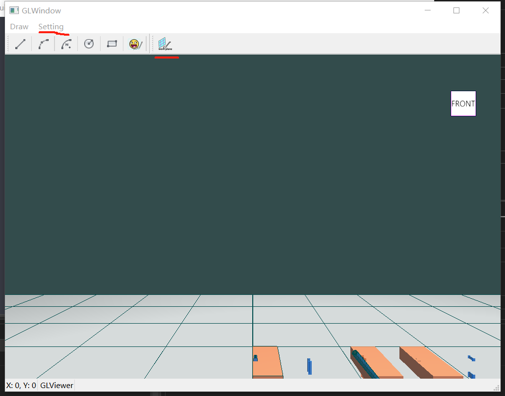
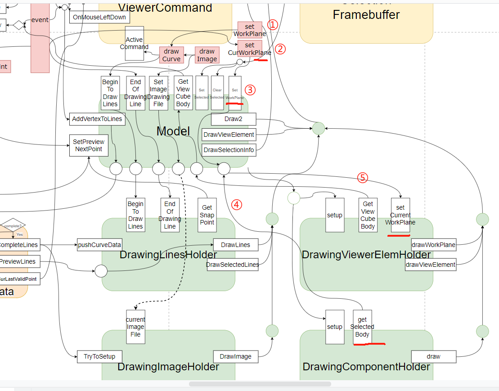
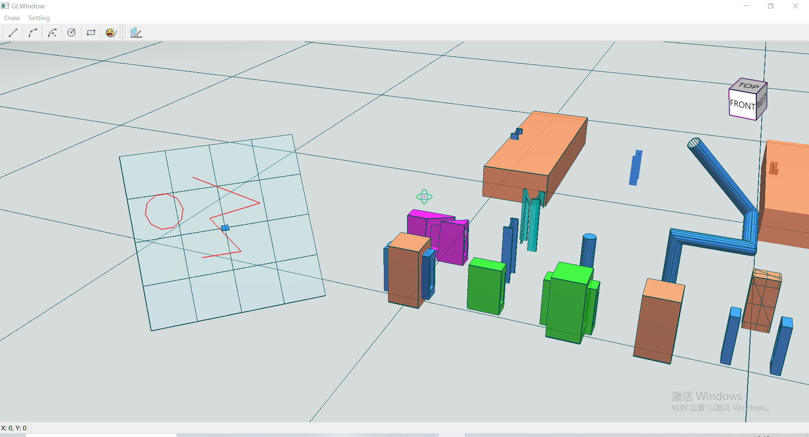

19.设置工作平面
在三维软件中工作平面不会局限在XOY平面，将空间中的其他平面设置为工作平面对于交互、设计意义重大，如关联组件的目标面进行绘制、造型等操作可以大大提高用户工作效率，并使设计更加准确可靠。
在此前绘制工作平面章节中，我们绘制了两个工作平面，分别为默认工作平面（defaultWorkPlane即XOY平面）和当前工作平面（currentWorkPlane），在本节课程中我们通过交互操作设置currentWorkPlane。

添加UI，我们首先创建一个新的ToolBar，然后将新建的actionWorkPlane添加到上述ToolBar上，记得创建新的Menu（MenuSetting），并把actionWorkPlane放进去。
提示
还有一件事要形成记忆习惯，那就是把图标资源加入到glviewer.qrc文件中，方便在项目中使用。

我们来看下接口调用逻辑，可以看出来设置工作平面功能实现依赖了框架体系的众多环节，虽然功能本身不复杂。

GLView.setWorkPlane，通过点击功能按钮调用此函数，进入设置工作平面状态，同时进入drawCurve状态以显示鼠标预览效果，随后当鼠标左键点击事件触发时会调用setCurWorkPlane；GLView.setCurWorkPlane，根据鼠标点击像素位置构造射线，调用Model.SetWorkPlane；Model.SetWorkPlane，首先调用DrawingComponentHolder.getSelectedBody获取当前选中的组件中的目标面，根据结果构造不同的参数（将默认工作平面设置为当前或设置新的工作平面）调用DrawingViewerElemHolder.setCurrentWorkPlane；期间还更新了ViewerSetting和DrawingLinesholder中的工作平面信息，以便于绘制准确的snapLabel和管理此后绘制的线数据。
此功能实现代码量并不大，但复用和依赖了框架体系的众多环节，完成了状态激活、操作预览、事件判断和触发、获取选择组件、设置目标面为工作平面、更新工作平面数据、绘制当前工作平面等过程。
Attention
- 我们优化了
snapLabel绘制时传递给顶点着色器的ModelMatrix，能够根据工作平面的不同进行适配显示。想象以下，如果工作平面是竖向的，而snapLabel的圆环仍是向上的，那样会让用户感到诧异，而此举消除了这种可能，代码如下； - 我们修复了一个小问题，在
DrawingViewerElemHolder.setCurrentWorkPlane中正确使用了offset参数，这样绘制工作平面时能稍微“向后”一点，方便其上绘制的线能够不被遮挡。
snapLabel绘制时的ModelMatrix优化代码如下，
QMatrix4x4 modelSnap;
modelSnap.translate(QVector3D(ViewerSetting::previewData.previewNextPt->X, ViewerSetting::previewData.previewNextPt->Y, ViewerSetting::previewData.previewNextPt->Z));
if (!ViewerSetting::currentWorkPlNormal.IsEqual(Vector3f::BasicZ, 1e-3))
{
Vector3f tNor = Vector3f::BasicZ.CrossProduct(ViewerSetting::currentWorkPlNormal);
double dAngle = qRadiansToDegrees(Vector3f::BasicZ.Angle(ViewerSetting::currentWorkPlNormal));
modelSnap.rotate(dAngle, QVector3D(tNor.X, tNor.Y, tNor.Z));
}
//modelSnap = m_modelMatrix * modelSnap;
m_lightShader.setUniformValue("model", m_modelMatrix * modelSnap);
注意我们线通过translate构造了偏移，然后通过rotate构造了旋转（转到当前工作平面上），好像不符合“先转后偏”原则？其实是符合的，我们来看QMatrix4x4对应函数的说明，这样组合后恰恰是mTranslate * mRotate的形式，此矩阵运算表达的是先转后偏。之后在左乘m_modelMatrix变换到GLView的z-up坐标系中。
QMatrix4x4函数说明
- translate：Multiplies this matrix by another that translates coordinates by the components of vector.
- rotate：Multiples this matrix by another that rotates coordinates through angle degrees about vector.
有了上述知识去详细的探究代码将会容易的多，带着好奇心去探究吧~
如果一切正常，或者遇到的问题被排查解决，那么运行之后的效果如下，有问题或疑问请查看工程代码或联系我。
